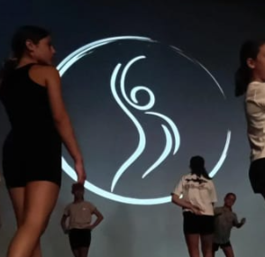

Ediciones
25 de junio de 2026
Próximamente: repositorio fotográfico
Cuando compartas las fotos, crearé álbumes por año con portada, selección destacada y visor de imágenes.
Festival anual
Un recorrido por cinco ediciones, cinco historias y muchos momentos que compartir.

Ediciones
Cuando compartas las fotos, crearé álbumes por año con portada, selección destacada y visor de imágenes.